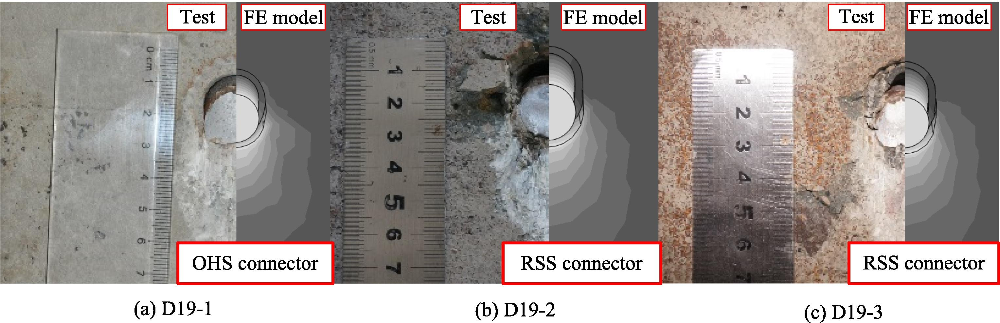
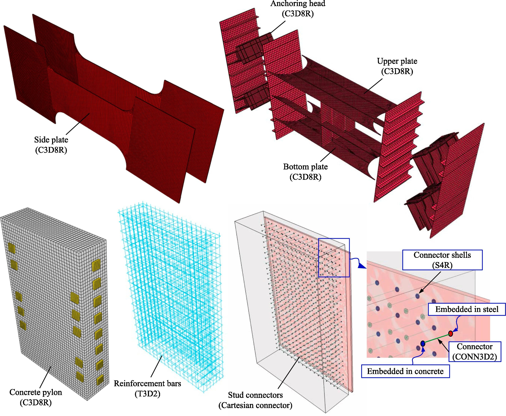
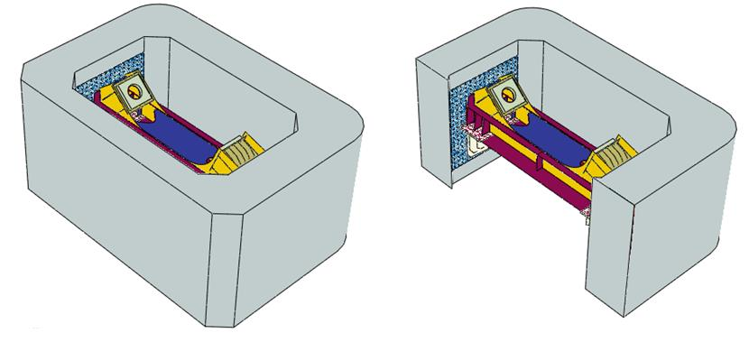
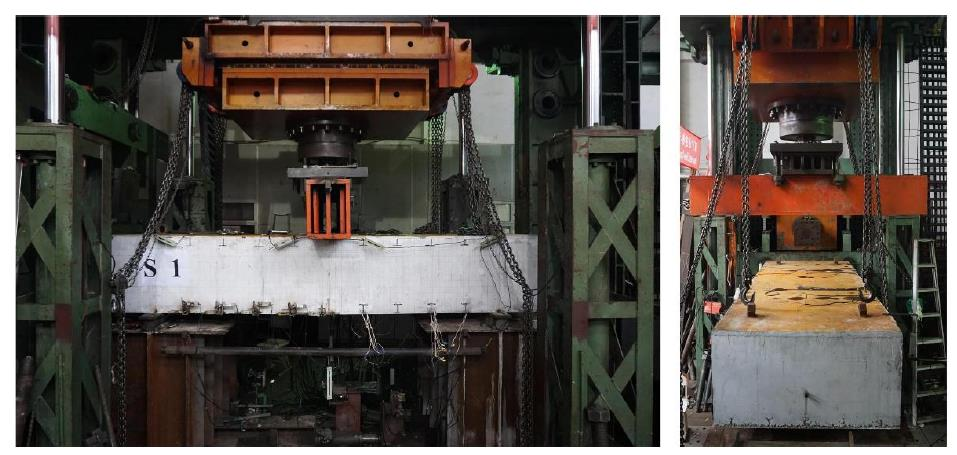
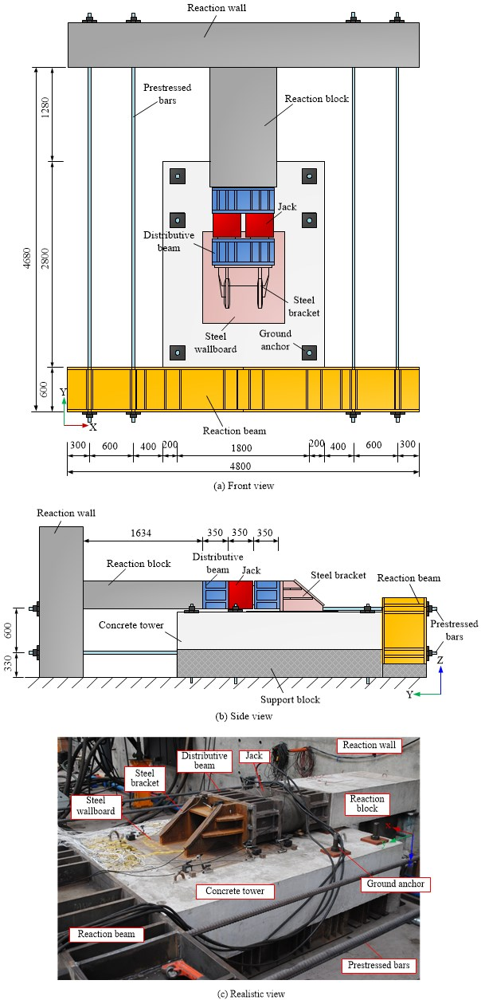

| Non-destructive Evaluation of Dry Storage Canisters Using Acoustic Sensing (U.S. Department of Energy Founded) |
Key Participant | Oct. 2021- |
| • Setting up an ultrasonic testing system. |
• Performing experimental and numerical studies. |
• Collaborating and coordinating with faculties, postdoctoral researcher and scientist from USC and Pacific Northwestern National Laboratory (PNNL). |
 |
 |
 |
| Study on the shear mechanism of Rubber-Sleeved Stud connector |
Key Participant | Sept. 2017-Jun. 2020 |
| • Conducted push-out tests on Rubber-sleeved Stud connectors and Ordinary Headed Stud connector. |
• Performed numerical research by using ABAQUS to reveal the deformation performance and composite mechanism of Rubber-Sleeved Stud connector. |
|  |
|  |
| Configuration and mechanism research on the cable-pylon composite anchorage of ground-anchored cable-stayed bridge |
Key Participant | Apr. 2019-Present |
| • Conducted FE analysis on the cable-pylon composite anchorage of Danjiangkou Bridge with the main span of 760 m. |
• Wrote the research report. |
|  |
| Study on the rational structure of the steel box girder in the Second Eastern Channel of Xiamen |
Assistant Researcher | May 2018-Present |
| • Designed one bridge program applicable for the Middle Fairway Bridge. |
• Participated in the finite element analysis of the Middle Fairway Bridge through ANSYS and wrote three chapters of the midterm research report. |
 |
| Shear test of steel-concrete composite structure in immersed tunnel of Shenzhen-Zhongshan Link |
Assistant Researcher | Jun. 2018-Present |
| • Participated in the shear model tests to investigate the failure modes and shearing capacity of Steel-Concrete-Steel sandwich structure. |
|  |
| Technical research on the steel-concrete interface mechanism of steel anchor girder applied in the cable-pylon composite anchorage of Shishou Yangtze River Bridge. |
Assistant Researcher | Aug. 2017-Jun. 2019 |
| • Participated in model experiments and numerical analysis on the steel-concrete interface of cable-pylon composite anchorage structure. |
• Wrote three research papers. |
• Wrote three chapters of the final research report. |
|  |
| Technical study on the reinforcement method of bridges by using Wire Mesh-Polyurethane Cement (WM-PUC) composite |
Assistant Researcher | Apr. 2015-Jul. 2016 |
| • Participated in the material property tests on Polyurethane Cement and bending tests of RC T-beams reinforced by Wire Mesh-Polyurethane Cement composite. |
• Wrote one research paper on mechanical properties of Polyurethane Cement composite. |